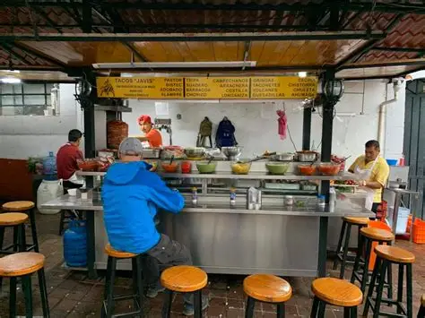
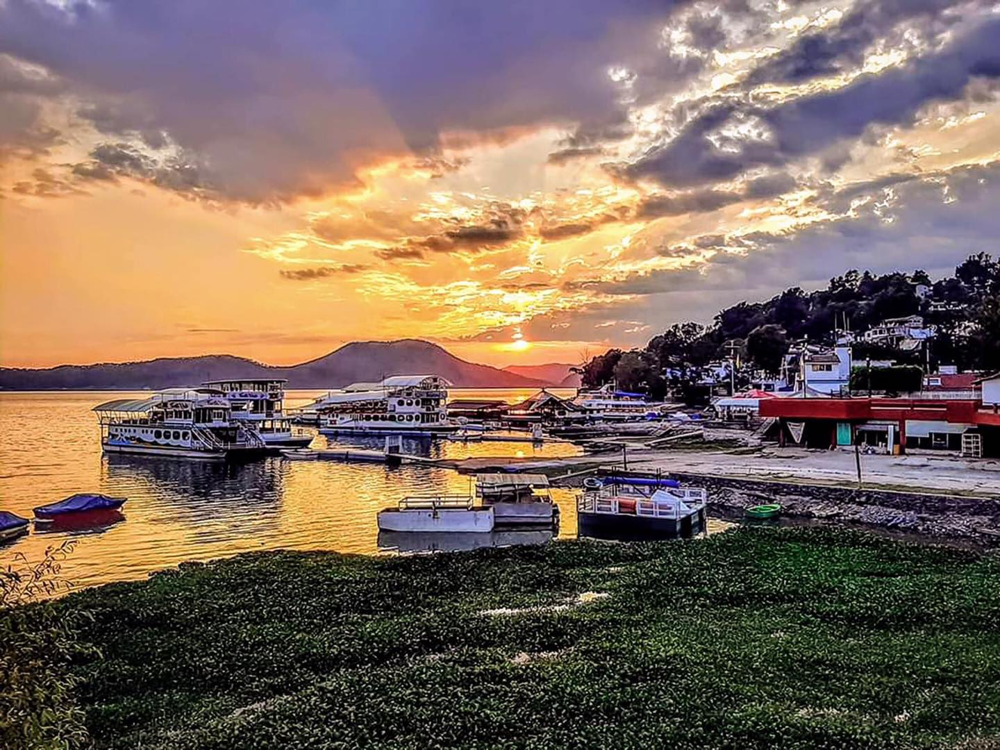

El Callejón del Hambre es uno de los rincones gastronómicos más emblemáticos de Valle de Bravo, famoso por sus tacos al pastor y otros antojitos típicos.
Ubicación: A unos 20–30 metros de la Parroquia de San Francisco de Asís, en pleno centro histórico de Valle de Bravo.
Oferta gastronómica: Tacos al pastor con piña asada y salsa de aguacate. Variedad de carnes: bistec, costilla, arrachera, tripa, cecina, longaniza y barbacoa. Otros antojitos: tortas, gringas, volcanes, alambres y campechanas.

El Embarcadero Municipal Valle de Bravo se encuentra en Fray Gregorio Jiménez de La Cuenca S/N, La Estrella, C.P. 51200, Valle de Bravo, Méx. Este lugar es un punto de encuentro vibrante para locales y turistas, ofreciendo acceso a diversas actividades acuáticas y paisajes impresionantes. El embarcadero es esencial para el turismo del pueblo, albergando eventos y proporcionando acceso a las tranquilas aguas del lago. Los visitantes disfrutan de paseos relajados por el malecón y de la atmósfera serena, mientras descubren una variedad de artesanías y puestos de comida que reflejan la rica cultura de la región.
LA VISTA QUE NOS REGALA
